绿色轮廓仅为公开地图几何投影；不是实例金标准。右侧为同一当前图像裁剪，插值不增加细节。未知可见性，不标注目标。
Small dirt parking lot with six cars in it, in between the chimney Court in the new court buildings, and across from the haycock wing building off free School Lane near the edge of the map
{"group_kind": "single_polygon", "accepted_current_roi": true, "projected_fraction": 1.0, "projected_pixels": 11300, "rgb_support": 0.9628318584070796, "depth_support": 0.9420353982300885, "eligible_patch_scales": [true, true, false]}
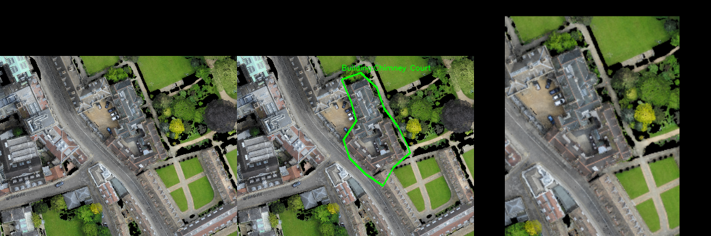
This is a blue car parked in front of Broadmeadows on Midsummer Meadows. On its left there are two cars, one black and one red.
{"group_kind": "name_or_type_alternatives", "accepted_current_roi": true, "projected_fraction": 1.0, "projected_pixels": 2865, "rgb_support": 0.9895287958115183, "depth_support": 0.9773123909249564, "eligible_patch_scales": [true, false, false]}
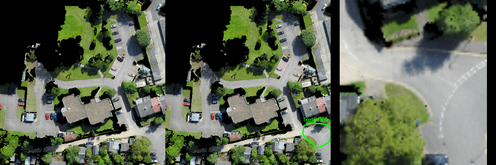
A white car in the driveway of a multicolored white and brown house with a multi-colored Brown and gray roof, that is next to a truck that's in the driveway of a white house with a gray roof off Aldridge Road
{"group_kind": "homonymous_road_polygons", "accepted_current_roi": true, "projected_fraction": 1.0, "projected_pixels": 15282, "rgb_support": 0.9290668760633425, "depth_support": 0.8546001832220913, "eligible_patch_scales": [true, false, false]}
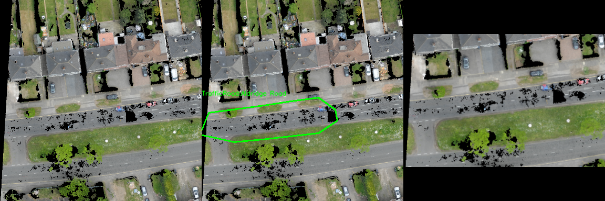
A white car is parked in front of a house with grey roof and white wall at the right side of the road named City road. A black car parked in front of it and no car parked behind it.
{"group_kind": "name_or_type_alternatives", "accepted_current_roi": false, "projected_fraction": 0.304246729960191, "projected_pixels": 1786, "rgb_support": 0.8600223964165733, "depth_support": 0.8101903695408734, "eligible_patch_scales": [false, false, false]}
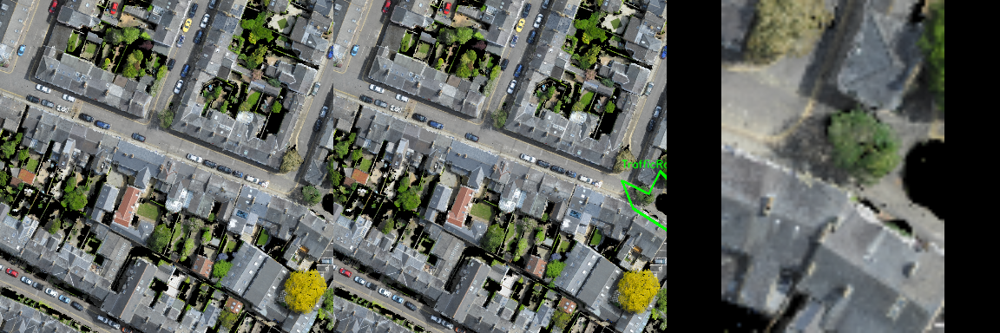
The gray house on Burton Wood Drive that is 3 houses to the left of the large gray building at the intersection with Livingstone Road.
{"group_kind": "single_polygon", "accepted_current_roi": false, "projected_fraction": 0.13502651050301093, "projected_pixels": 41940, "rgb_support": 0.9590605627086314, "depth_support": 0.9433953266571292, "eligible_patch_scales": [true, true, true]}
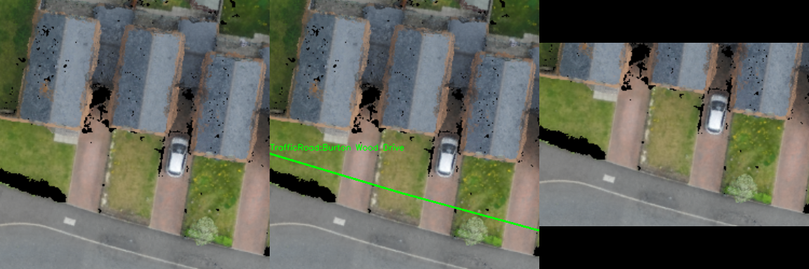
The dark building that is in the corner of Pound Hill road that has the cars parked diagonally. It's attached to the shorter brown roof building.
{"group_kind": "homonymous_road_polygons", "accepted_current_roi": false, "projected_fraction": 0.9842658085200016, "projected_pixels": 19381, "rgb_support": 0.8310200712037562, "depth_support": 0.7467622929673391, "eligible_patch_scales": [true, false, false]}
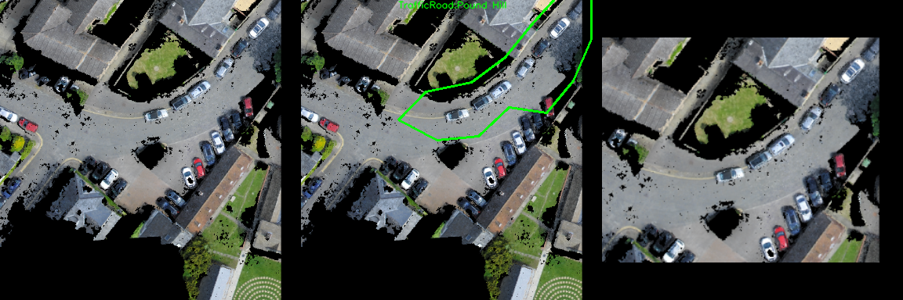
This is a lawn located right near Bin Brook. Next to it is Ramsay Hall. Behind it there is another lawn on which Hall is located.
{"group_kind": "homonymous_other_polygons", "accepted_current_roi": false, "projected_fraction": 0.42792511469940925, "projected_pixels": 6987, "rgb_support": 0.6623729783884357, "depth_support": 0.5749248604551309, "eligible_patch_scales": [true, false, false]}
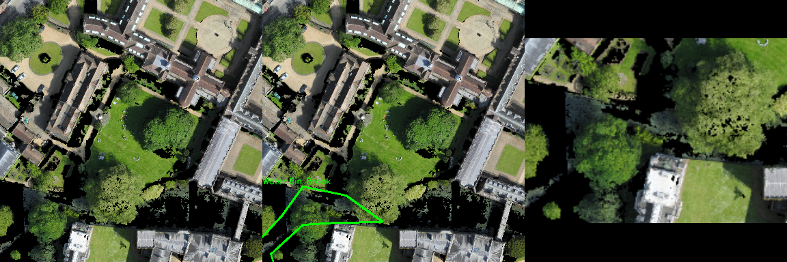
This is a building found on Mill Lane right next to 16 Mill Lane. The building is L-shaped and is located next to Oast House and 17 Mill Lane.
{"group_kind": "homonymous_other_polygons", "accepted_current_roi": true, "projected_fraction": 1.0, "projected_pixels": 4175, "rgb_support": 0.9810778443113772, "depth_support": 0.9475449101796407, "eligible_patch_scales": [true, false, false]}
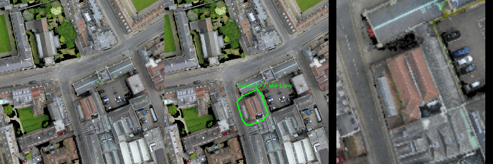
On Trumpington Street, to the right of FitzWilliam House, this small parking lot is to the left of The Hostel, with two dark blue cars in it.
{"group_kind": "single_polygon", "accepted_current_roi": true, "projected_fraction": 0.9417796940144244, "projected_pixels": 3826, "rgb_support": 0.9610559330893884, "depth_support": 0.9317825405122844, "eligible_patch_scales": [true, false, false]}
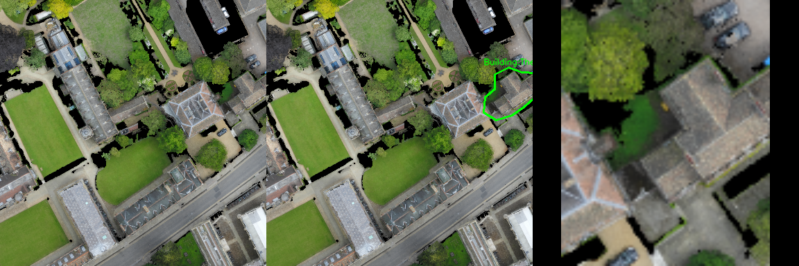
Small parking lot with two black cars on it in front of the Cambridge and Peterborough probation trust building on the corner of warkworth terrace and warkworth Street
{"group_kind": "name_or_type_alternatives", "accepted_current_roi": false, "projected_fraction": 0.5560568275960655, "projected_pixels": 3308, "rgb_support": 0.9250302297460702, "depth_support": 0.8839177750906893, "eligible_patch_scales": [true, false, false]}
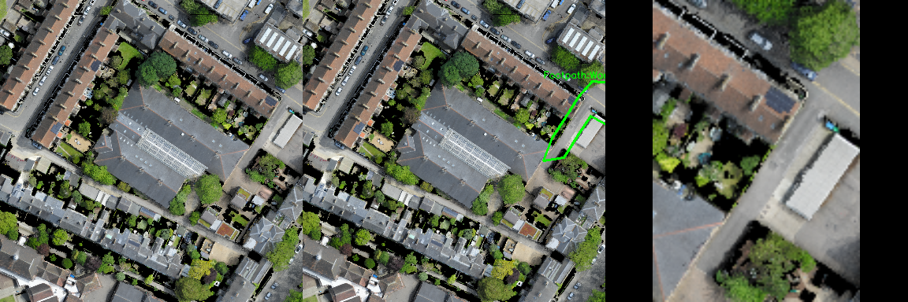
A multi-colored brown and beige house, with a red door and a gray roof, off Melbourne place, next to a multicolored beige and light blue house with a gray roof
{"group_kind": "name_or_type_alternatives", "accepted_current_roi": false, "projected_fraction": 0.6690522774003256, "projected_pixels": 363, "rgb_support": 0.977961432506887, "depth_support": 0.9614325068870524, "eligible_patch_scales": [false, false, false]}
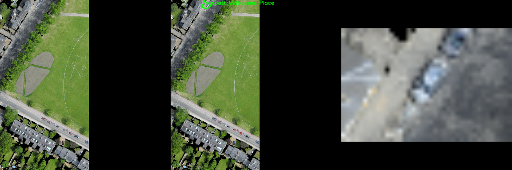
Red car in a parking lot at the Custodian Hut building on the first lane from the Genetics building. No is car next to it.
{"group_kind": "single_polygon", "accepted_current_roi": false, "projected_fraction": 0.8083191402838407, "projected_pixels": 32331, "rgb_support": 0.9617395069747301, "depth_support": 0.9321703628096873, "eligible_patch_scales": [true, true, false]}
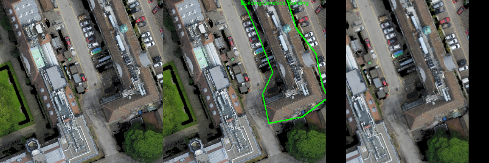